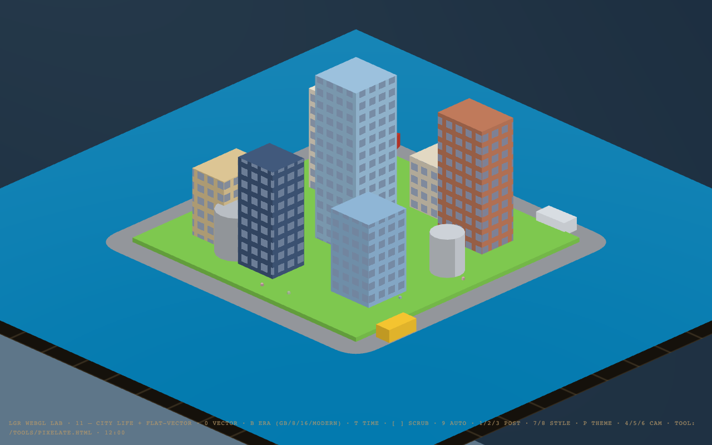
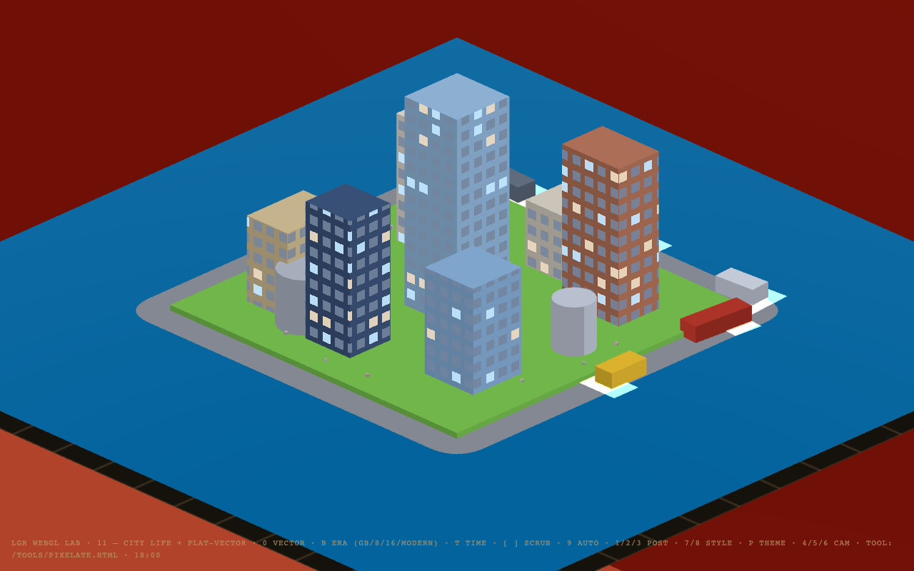
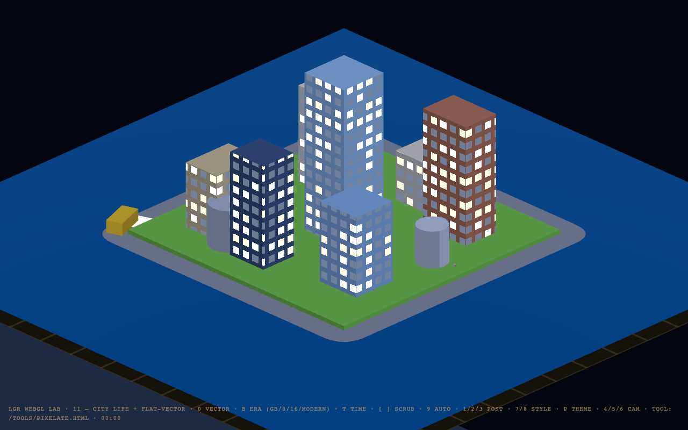
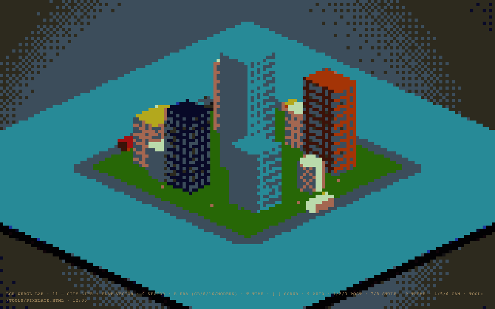
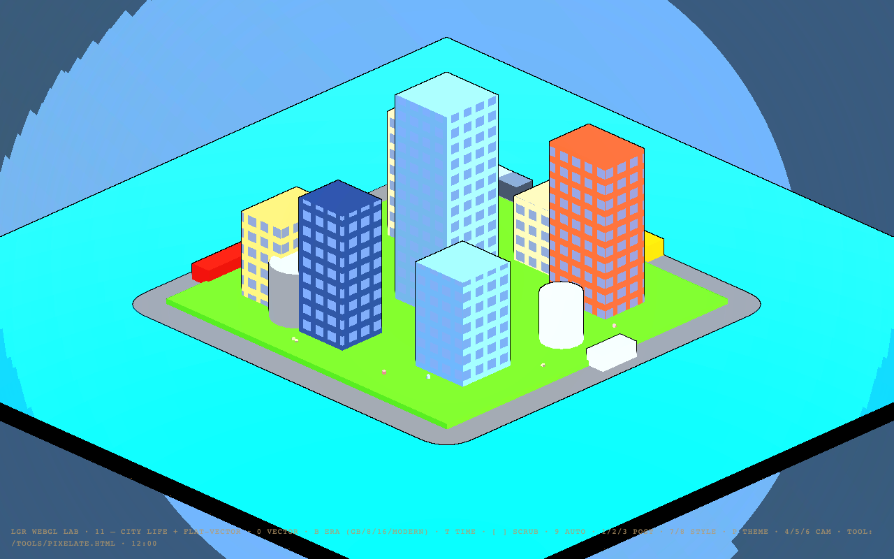

A look at what we've been building: a real-time city engine —
isometric city views with living traffic, people, a full day/night cycle, and
switchable art styles. Nothing here is a drawn illustration; every frame is the
engine running live in a browser.
One city, every style — in one continuous shot
The full tour: the city living through day and night — traffic, people,
windows waking at dusk — then zooming out into pixel art (cycling Game Boy,
8-bit, 16-bit and modern looks), gliding back in to the smooth cartoon close-up,
and out again. The art style follows the camera.
The day/night cycle
One slider scrubs the whole day — the sun moves, windows light up,
traffic keeps looping. All real-time.

Daytime — taxis, cars and a bus circulating the district

Evening rush — headlights come on, windows start to glow

Midnight — staggered lit windows, one taxi still working
Style stills

The exact same scene as clean 8-bit pixel art

…or cel-shaded cartoon with ink outlines
What this could do for a game
A signature look, consistently. The art direction is rules in the
engine — palette, shading, line treatment — so every building, vehicle and screen
matches. No more one-off art that doesn't fit together.
A city that feels alive. Day/night, rush hours, lit windows,
ambient traffic — atmosphere a static map can't give, basically free at runtime.
Concept art in, game assets out. We also built a tool that takes
any image and converts it into palette-consistent pixel art at a chosen bit-era,
exporting game-ready files.
Any city, any style. Next up: real landmark buildings and a
generator for whole unique districts — New York, Paris, fictional cities — all in
the same style.
What's coming next
Landmark buildings (real modeled assets flowing through the same styles)
Multiple cities — real and fictional — from one pipeline
Weather and seasons on top of the day/night system
One-key capture of any scene as video/stills for marketing
Everything above runs in a browser at 120 fps. If any of this looks
useful for your project, let's talk — it's built to be adapted.